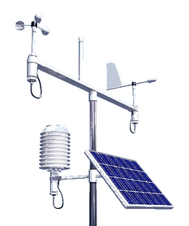

Example `metamet` objects
mm1.RdThree example `metamet` objects containing meteorological data from the Auchencorth Moss (UK-AMO) site.
Format
Each object is a `metamet` list containing:
- `dt`
A data table of observations with columns for time, site, and various meteorological variables (temperature, wind speed, wind direction, precipitation, etc.).
- `dt_meta`
A metadata table describing each column in `dt`, including variable type, units, and other attributes.
- `dt_site`
A table containing site-level information such as location (latitude/longitude) and elevation.
Details
- `mm1`: Data from 2025-08-22, logger 03, file F02 - `mm2`: Data from 2025-08-22, logger 04, file F01 - `mm3`: Data from 2026-02-03, logger 03, file F02
These objects are useful for testing and demonstrating the `metamet` package functionality, including joining, time averaging, and subsetting operations.